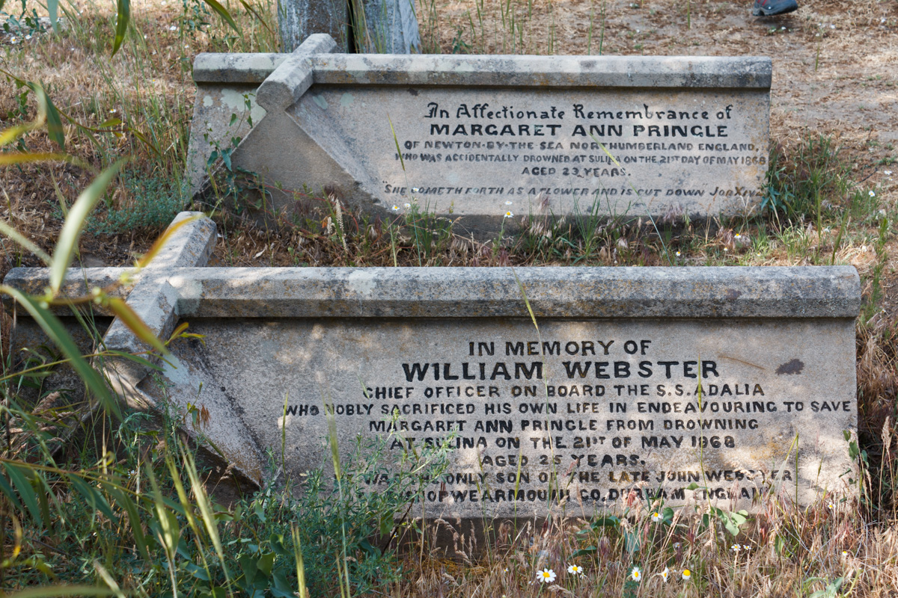
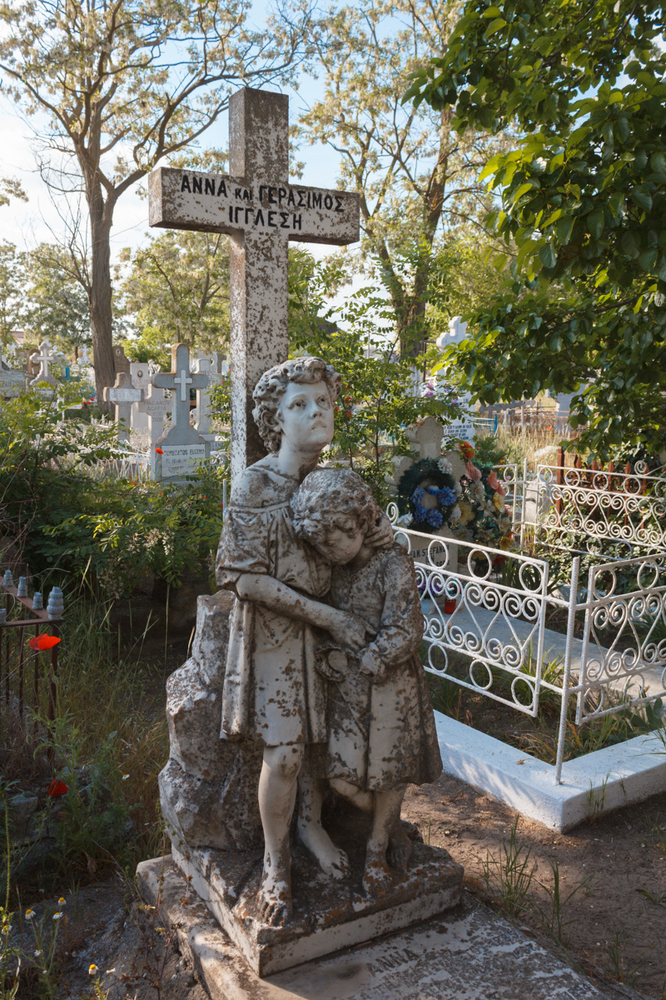

La marginea oraşului Sulina îşi dorm somnul în nisipul Deltei
laolaltă ortodocşi, musulmani, ruşi lipoveni. Cimitirul din Sulina
este plasat între cimitirele-muzeu din România, alături de Bellu din
Bucureşti şi Cimitirul Vesel din Săpânţa, Maramureş. Este situat la
marginea oraşului, pe drumul spre plaja virgină.
În lumea pietrelor funerare ne poartă Valentin Lavric, profesor de
limba română de la şcoala din Sulina. „Un bătrân cavaler maltez se
plimba plângând prin apa mării care inundase cimitirul. În urmă cu
25 de ani, intrase cu remorcherul într-un vas de pasageri. Aceştia
muriseră înecaţi”, spune profesorul Lavric. Aşa începe povestea
cimitirului din localitate.
În 1864, inginerul-şef al Comisiunii Europene a Dunării, Charles
Hartley, a primit sarcina să amenajeze un cimitir atât pentru localnici,
pentru personalul Comisiunii Europene a Dunării, cât şi pentru cei care
mureau înecaţi pe tot parcursul Dunării şi erau scoşi de apă la gura de
vărsare. Pe aceştia, primăria îi înhuma pe banii comunităţii. Pe un
teren mai înalt a fost ridicată prima capelă, iar marinarii britanici
decedaţi anterior au fost reînhumaţi.
Romeo şi Julieta de la Dunăre
În cimitir îşi doarme somnul de veci fiul amiralului britanic Parker,
care a fost împuşcat de piraţii de pe Dunăre, prin 1826. Atunci, cei de
pe corabia britanică au trecut la represalii împotriva oraşului Sulina.
Au bombardat toată Sulina, lăsând doar farul şi biserica în picioare. A
fost o tragedie pentru cei aproape 250 de locuitori ai oraşului.
La bordul bricului militar se afla îmbarcat şi aspirantul de marină
englez Charles Augustus Hartley, cel care avea să devină inginerul-şef
al CED. Venise la Sulina pentru înfiinţarea bazei navale. Tot în
cimitirul de la Sulina se găsesc mormintele a doi îndrăgostiţi din oraş,
William Webster (25 de ani), ofiţer secund al navei Adalia (o navă a CED
la Sulina) şi logodnica sa, Ann Margaret Pringle (23 de ani), morţi cu
doar câteva luni înainte de căsătorie, în 1868, în timpul unei plimbări
romantice. Pe 21 mai, când marea era învolburată, ea a căzut în Dunăre,
iar el a încercat s-o salveze. Din păcate, s-au înecat amândoi. Mamele
lor au ridicat două monumente funerare în amintirea tinerilor morţi la
gurile Dunării.
O altă poveste romantică este cea a Izabellei John Robinson, care a
murit înecată, atunci când nava pe care se afla a intrat în tangaj (n.r.
– mişcare oscilatorie de înclinare a unei nave). Ea se îndrepta spre
Sulina pentru a-şi vedea viitorul logodnic. Cum purta crinolină, ea nu a
mai putut fi scoasă din apă decât moartă, întrucât hainele au tras-o la
fund.


Singurul mormânt din România al unui pirat
Printre pietrele funerare din cimitir o găsim şi pe cea a prinţesei
Ecaterina Moruzi. „La curte i se zicea «Muma pădurii», însă era o femeie
foarte inteligentă. Ea a murit înecată într-o copcă, pe gheaţă. După
moartea ei, fiul a devenit muritor de foame, prin Bucureşti”, mai spune
profesorul Lavric. Pe piatra funerară a prinţesei stă scris: „Şi buzele
ce am gustat/ Şi răul ce am îndurat/ Trecută încă o ceaţă/ Atâta numai
am trecut/ E binele ce am făcut în viaţă”.
Pe 25 martie 1871, chiar de Ziua Internaţională a Greciei, şi-a găsit
sfârşitul şi piratul Ghiorghios Kontoguris, născut în Kefalonia. Pe
piatra sa funerară este inscripţionat pentru eternitate simbolul
piraţilor: craniul cu două oase încrucişate.
Ce însemna pirat în acele vremuri? Ne explică Valentin Lavric: „Piratul
lega o scândură de coarnele unei vaci, la care atârna două felinare.
Vaca mergea la păscut şi legăna felinarele. Comandanţii corăbiilor care
se apropiau de coastă credeau că acolo sunt nave ancorate şi se
îndreptau spre ţărm. Din nefericire, cădeau în cursă şi eşuau”. Este
singurul mormânt de pirat din România.